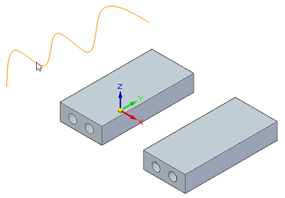
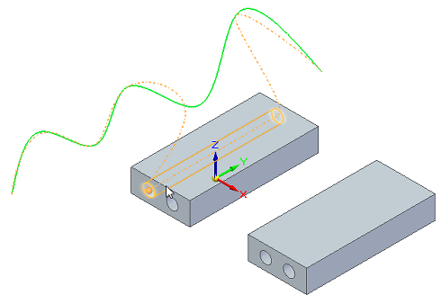
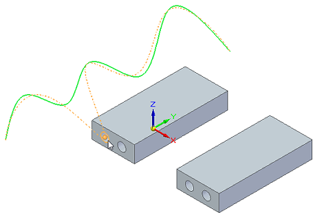
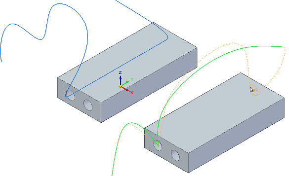
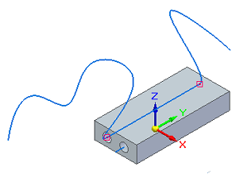
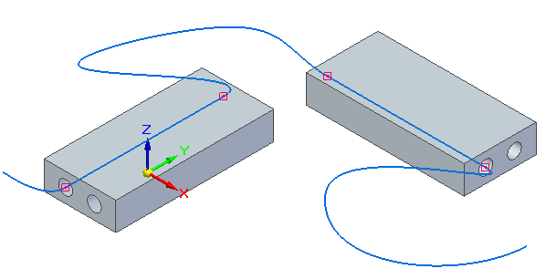

Route a 3D curve through circular faces
You can use the Route command to route a previously created 3D curve through circular openings in part or sheet metal, or in a 3D sketch in an assembly.
Use the 3D Draw group→3D Curve command  to create 3D sketch curves.
to create 3D sketch curves.
-
In a part or sheet metal document, select the 3D Sketching tab→3D Draw group→Route command .
In an assembly document, the command is located on the Home tab.
-
Click a 3D curve.

-
Select the first circular face or feature for the curve route.
Clicking a circular feature routes the curve directly through both openings.

Clicking a face gives you options for a more flexible route.

-
Do one of the following:
-
To continue routing the same 3D curve path, click another circular opening.
-
To see routing options, hover over another circular opening or feature, or press+hold the F key.
-
To route a different 3D curve, select the curve and click a circular opening.

-
-
When you are finished routing the 3D curve, right-click in the graphics window.

The Route command creates a connect relationship with the cylindrical openings. You can select and delete this relationship if needed.

How do I
Draw a 3D sketchCreate a 3D point using coordinates
Modify a 3D point
Create a 3D curve
Dynamically edit a 3D curve
Route a 3D sketch path between 2 points
Mirror 3D sketch elements
Create an equation driven curve
Split a 3D sketch element
Move 3D sketch elements
Learn more
Starting a new synchronous 3D sketchStarting a new ordered 3D sketch
Starting a new assembly 3D sketch
3D sketch relationships
Look up more details
New 3D Sketch command3D Sketch command (assembly)
Show 3D alignment lines
Activate command (3D sketching)
Copy Dimensions to Model command
3D Point command
3D Point command bar
3D Line command
3D Circle by Center command
3D Rectangle by Center command
Tangent 3D Arc command
3D Arc by 3 Points command
3D Curve command
3D Curve command bar
OrientXpres tool
Routing Path command
Route command
Equation Driven Curve command
Equation Driven Curve command bar
Equation Driven Curve dialog box
Mirror command (3D Sketching)
3D Fillet command
3D Trim command
3D Include command
Related Topics
Enable Regions command (3D sketching)Split 3D Sketch command